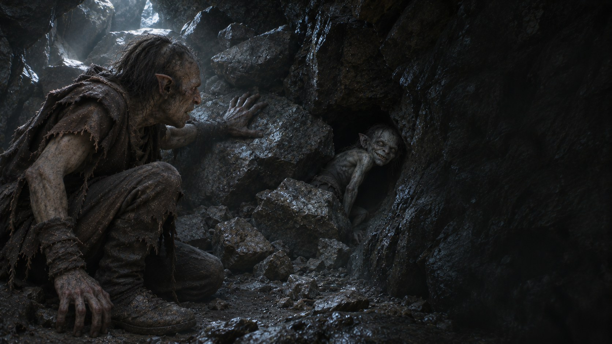

Fin de l’aventure · Trahison
Les Promesses de Gollum
Un trésor promis. Une issue condamnée.
Découvrir votre sortLe prix de la confiance
Vous desserrez la corde. Gollum sourit et vous fait signe de le suivre dans la fissure. Vous devez enlever votre armure pour vous y glisser.
« Par ici, gentil Orque. Encore un peu plus loin… »
Vous rampez jusqu’à une bifurcation. Un fracas résonne derrière vous : Gollum vient de faire tomber les rochers qui retenaient l’entrée. Lorsque vous vous retournez, il a disparu par un trou trop étroit pour vos épaules.
Vous appelez. Seul son rire vous répond. Sans lumière, sans eau et sans issue, vous comprenez enfin ce que valait son trésor.
La prochaine fois, exigez au moins un acompte. Enfin… s’il y a une prochaine fois.